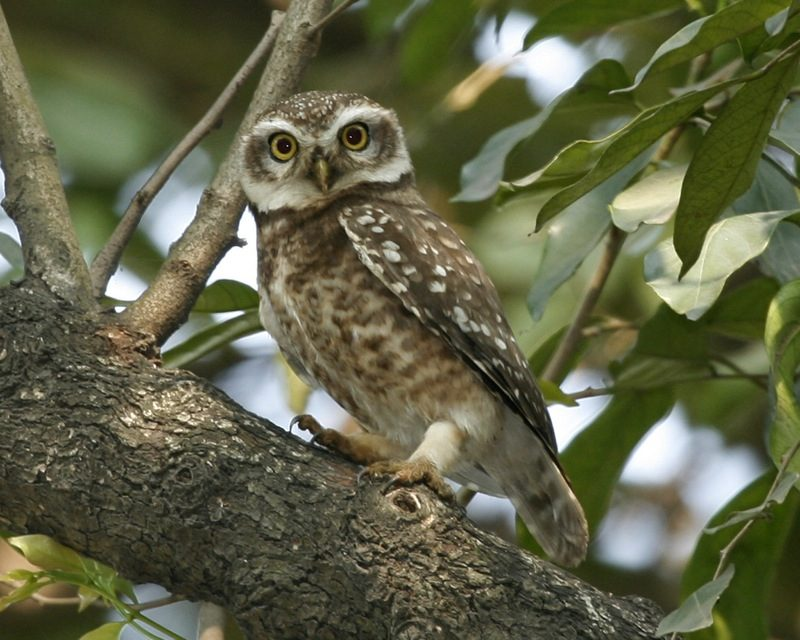

चित्तीदार उल्लूSpotted Owlet
Athene brama · Strigidae · BRD-0019

- Scientific name
- Athene brama (Temminck, 1821)
- Family
- Strigidae
- Hindi
- चित्तीदार उल्लू
- Status here
- native
- IUCN
- LC
When to look कब देखें
Present all year.
चित्तीदार उल्लू / Spotted Owlet
Athene brama (Temminck, 1821) — Strigidae
चित्तीदार उल्लू — उत्तर प्रदेश के गांवों और कस्बों में पाया जाने वाला एक छोटा, चित्तीदार और घरेलू उल्लू है जो पुराने पेड़ों के कोटरों तथा इमारतों की दरारों में निवास करता है। यह मुख्य रूप से रात्रिचर है, लेकिन दिन के समय भी दीवारों पर या पेड़ों की शाखाओं पर जोड़ों में आसानी से विश्राम करते हुए देखा जा सकता है। शाम होते ही इसकी तेज, तीखी और चीखने-चहकने जैसी आवाजें ग्रामीण घरों के आसपास गूंजने लगती हैं, जो इसके होने का मुख्य संकेत हैं। खेतों के पास कीटों और चूहों का शिकार करके यह किसानों के लिए एक मूल्यवान मित्र की भूमिका निभाता है।
Quick Identification त्वरित पहचान
| Feature | Description |
|---|---|
| Size | Small, stocky owl (around 19–21 cm total length); lacks ear tufts |
| Plumage | Greyish-brown upperparts heavily spotted with white; underparts white with brown barring |
| Head & Face | Large rounded head with a white facial disc; prominent white eyebrows (supercilium); yellow irises |
| Bare Parts | Bill is greenish-horn or pale yellow; legs are feathered down to the toes; feet are yellowish-green |
| Behaviour | Frequently bobs head and stares when disturbed; active at dusk and night; often seen in pairs |
Field tip: Look for them roosting in tree hollows (especially neem, mango, or peepal) or on ledges of old buildings during late afternoons. They are highly vocal at dusk, producing a noisy chatter of screechy calls that sound like a quarrel.
Morphology आकारिकी
Biometrics (typical measurements in the northern Indian plains):
| Measurement | Range |
|---|---|
| Total length | 190–210 mm |
| Wing (flattened chord) | 143–171 mm |
| Tail | 65–83 mm |
| Tarsus | 25–28 mm |
| Bill (culmen from base) | 18–21 mm |
| Weight | 100–120 g |
Plumage: A small, greyish-brown owl with a stocky body and a short tail. The upperparts are grey-brown, covered in white spots. A white collar-like band is visible on the hindneck. The underparts are white, marked with brown streaks and bars. The facial disc is whitish with fine dark markings, framed by a white eyebrow and throat patch.
Bare parts: The irises are bright golden-yellow. The bill is greenish-horn, sometimes with a yellowish tip. The toes are yellowish-green or greenish-brown, with black claws. The tarsi are heavily feathered to protect against prey bites.
Vocalisations
Spotted Owlets are highly vocal, especially at dawn and dusk.
- Contact and alarm call: A loud, screechy chattering or cackling ji-ji-ji-ji-ji or chirur-chirur, ranging from 1.5 to 3.0 kHz, uttered during territorial disputes or when agitated by crows.
- Song/Breeding call: A rhythmic, high-pitched cheevak-cheevak or chug-chug repeated in sequence by pairs, representing mutual duetting during the breeding season.
Ecological Role पारिस्थितिक भूमिका
Nocturnal predator. Spotted Owlets hunt actively at night, acting as key predators of insects and small rodents.
- Pest control: They consume large quantities of agricultural pests, including grasshoppers, beetles, crickets, and field mice, maintaining ecological balance in farmland ecosystems.
- Secondary cavity nester: They rely on natural tree cavities, old woodpecker holes, or human-made structures for nesting, contributing to nest-site dynamics in mixed woodlands.
Life Cycle / Phenology जीवन चक्र
- Pair-bond: Monogamous; pairs share strong bonds and remain together throughout the year, frequently preening each other.
- Breeding season: November to April, peaking between February and March in northern India.
- Nesting: They nest in tree cavities, holes in old walls, or under roof eaves. They line the nest cavity with dry leaves, feathers, and grass.
- Clutch size: 3 to 5 round, white eggs.
- Incubation: 28–32 days, carried out primarily by the female, while the male brings food.
- Fledging: Nestlings fledge in about 28–35 days and remain near the parents for several weeks to learn hunting skills.
Host Plants or Prey आहार
Primary food items:
- Insects: Large beetles (dung beetles, scarabs), crickets, grasshoppers, and locusts.
- Vertebrates: Small rodents (field mice, house mice), shrews, small frogs, and occasional small birds or lizards.
Predators / Natural Enemies शत्रु
- House Crow (Corvus splendens) — mob roosting owls during the day.
- Black Kite (Milvus migrans) — hunts fledglings and competes for roosts.
- Large Snakes (such as Indian Rat Snake — Ptyas mucosa) — raid nest cavities to consume eggs and chicks.
Agricultural / Human Relevance कृषि प्रासंगिकता
Natural rodent control. By preying on rodents and agricultural pests, Spotted Owlets provide a natural service to farmers, reducing crop damage in storage and fields.
Cultural beliefs. In rural Uttar Pradesh, owls are associated with superstitious beliefs; some view them as bad omens, while others link them with Lakshmi (the Hindu goddess of wealth). Educating local communities about their pest-controlling role is vital for their conservation.
Expected Locally स्थानीय रूप से अपेक्षित
Not a field record. Written from published accounts for eastern Uttar Pradesh. No confirmed local sighting yet — if you have seen it, that is what the atlas needs.
अभी तक स्थानीय पुष्टि नहीं। यह विवरण प्रकाशित स्रोतों से है, किसी अवलोकन से नहीं।
A very common resident in the Basti and Ayodhya regions. They are frequently observed roosting in old mango orchards (Mangifera indica), peepal trees (Ficus religiosa), and in the cracks of old brick chimneys, water towers, and abandoned village houses. Their noisy screeching at dusk is a common sound in residential areas.
Distribution वितरण
Global range: Widespread across the southern parts of Asia, from Iran, Pakistan, India, Nepal, Bhutan, and Bangladesh to Myanmar, Thailand, and Indochina.
In India: Found throughout the plains and foothills, up to 1,500 metres in the Himalayas.
In Uttar Pradesh: An abundant, widespread resident in all districts.
In Basti district / eastern UP: Highly common in agricultural landscapes, village settlements, and urban parks.
Range notes: Populations are stable due to their adaptability to human-modified habitats.
Research Questions शोध प्रश्न
Anyone can investigate these | कोई भी इन प्रश्नों की जाँच कर सकता है
- Which tree species in your village are most commonly used by Spotted Owlets for nesting? / आपके गाँव में चित्तीदार उल्लू घोंसला बनाने के लिए किस पेड़ के कोटरों का सबसे अधिक उपयोग करते हैं? — Identify and catalog nesting trees to support conservation.
- How does the presence of artificial streetlights affect the hunting behavior of Spotted Owlets at night? — Observe whether they hunt near lights to capture attracted insects.
- What is the diet composition of Spotted Owlets in your area based on regurgitated pellets? / उल्लू द्वारा उगले गए भोजन के अवशेषों (पेलेट्स) के विश्लेषण से उनके मुख्य आहार का पता कैसे लगाया जा सकता है? — Collect and dissect pellets to identify bones and insect parts.
- How do Spotted Owlets defend their nests when approached by domestic cats or crows? — Document and describe their alarm behavior and physical threat displays.
- Do Spotted Owlets reuse the same nesting cavity year after year, and how do they interact with other cavity-nesting birds? — Monitor specific cavities across multiple breeding seasons.
Similar Species मिलती-जुलती प्रजातियाँ
| Species | How to tell apart | हिंदी |
|---|---|---|
| Jungle Owlet (Glaucidium radiatum) | Lacks the white spots; has fine, close rufous-brown bars; prefers denser forest | जंगली उल्लू — चित्तियों के स्थान पर धारियां |
| Eurasian Scops Owl (Otus scops) | Has prominent ear tufts; slimmer build; reddish-brown or grey camouflage | यूरेशियाई स्कोप्स उल्लू — कान जैसी कलगी |
| Little Owl (Athene noctua) | Slightly larger; more streaked than spotted on underparts; not found in local plains | लिटिल उल्लू — मुख्य रूप से पहाड़ी क्षेत्रों में |
Field rule: Small size, white spots on greyish-brown upperparts, yellow eyes, lack of ear tufts, and loud chattering calls in pairs confirm the Spotted Owlet.
Taxonomy & Classification वर्गीकरण
Original description. Coenraad Jacob Temminck described the Spotted Owlet as Strix brama in 1821 in his work Nouveau recueil de planches coloriées d'oiseaux (Vol. 2, Pl. 68). The type locality was Pondicherry, India. The genus name Athene is dedicated to the Greek goddess Athena (goddess of wisdom, associated with owls), and brama refers to Brahma, the creator deity in Hinduism.
Subspecies. Four subspecies are recognized globally, with the following occurring in India:
| Subspecies | Authority | Range | Notes |
|---|---|---|---|
| A. b. indica | (Franklin, 1831) | Northern India, Pakistan, Nepal, Bangladesh | UP subspecies; larger and paler with white spots |
| A. b. brama | (Temminck, 1821) | Southern India, Sri Lanka | Nominate form; smaller and darker |
| A. b. pulchra | Hume, 1873 | Myanmar, Southern China | Darker plumage with distinct barred tail |
Family and order placement. Placed in the order Strigiformes, family Strigidae (true owls). Strigidae is a diverse family containing around 230 species of nocturnal raptors worldwide.
Phylogenetic notes. Genetic analyses indicate that the genus Athene is closely related to the pygmy owls (Glaucidium). Athene brama is genetically distinct from the Western Burrowing Owl (Athene cunicularia).
IUCN status rationale. Listed as Least Concern (LC). The species has a massive global range, a stable population trend, and exhibits high tolerance to human-modified habitats.
Photo Gallery फोटो गैलरी
References संदर्भ
- Temminck, C. J. (1821). Nouveau recueil de planches coloriées d'oiseaux. Vol. 2, Pl. 68. Lanoe, Paris.
- Ali, S. & Ripley, S.D. (1999). Handbook of the Birds of India and Pakistan. Vol. 3. Oxford University Press, New Delhi.
- Grimmett, R., Inskipp, C. & Inskipp, T. (2011). Birds of the Indian Subcontinent. 2nd ed. Christopher Helm, London.
- Kumar, T.S. (1985). The ecology of Spotted Owlet (Athene brama) in Andhra Pradesh. Ph.D. Dissertation, Osmania University.
- BirdLife International (2024). Athene brama. IUCN Red List of Threatened Species. Ver. 2024.
- GBIF Occurrence Data — Athene brama, Uttar Pradesh (2010–2025).
Source file: species/fauna/birds/spotted_owlet.md